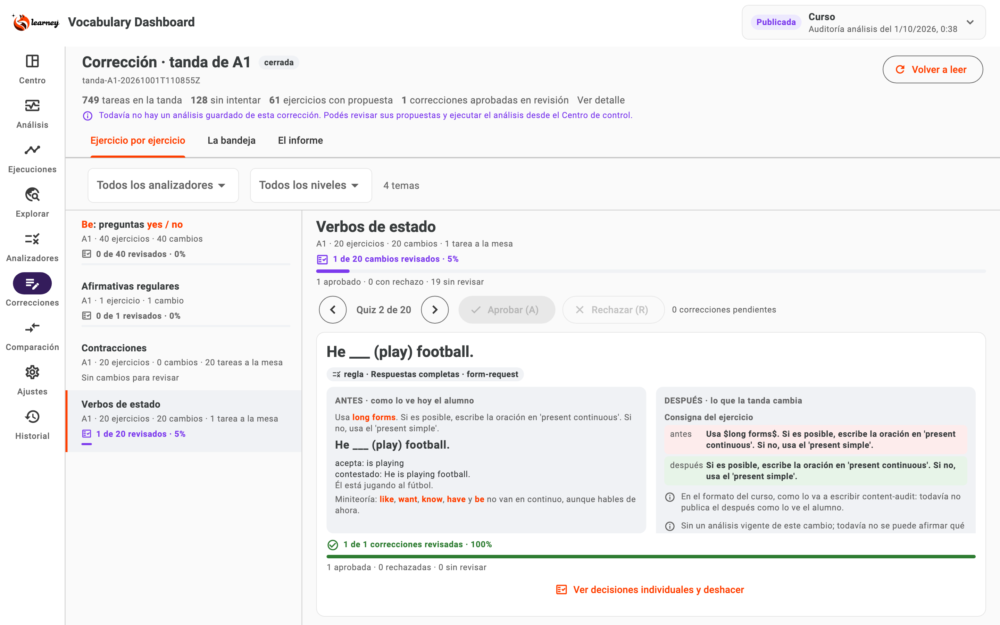

063Compilado · reinicio pendienteCorrecciones · 9 octubre 2026, 09:15 ART
Un quiz por vez, con flechas y teclado
El espacio central muestra un solo antes y después; las cuentas de revisión se conservan.
El visor está probado y compilado; falta reabrir la UI porque la Mac está bloqueada. La instancia actual sigue abierta y tus decisiones guardadas no cambiaron.
La colección deja de ser una lista vertical

Datos en memoria: quiz 2 de 20; aprobación de prueba, no decisión real.
Se aprovechó el alto del marco manteniendo el estilo existente. Sólo el contenido largo del quiz se desplaza; navegar no guarda ni aprueba.
Las cuatro teclas actúan sobre el quiz visible
Tecla o botón
Qué hace
Qué conserva
← / →
Anterior / siguiente; “Quiz N de M”.
Sin decidir; sin saltar los límites.
A · Aprobar
Aprueba sus correcciones pendientes.
Las decisiones anteriores y la posición.
R · Rechazar
Rechaza sus correcciones pendientes.
Los otros quizzes y la posición.
Decisiones individuales
Abre el detalle y permite deshacer.
Las mismas unidades y controles guardados.
A/R no actúan al escribir, con un diálogo abierto, en otra pestaña o mientras se guarda. Tampoco aprueban propuestas retiradas ni historia publicada.
Las pruebas pasan sin tocar la corrida real
87 / 87
Pruebas de regresión; una integración real omitida explícitamente.
22 / 22
Pruebas focalizadas repetidas en el código instalado.
11 / 11
Registros reales conservados antes del reinicio pendiente.
Análisis estático limpio. Ventanas de 900×800 y 1440×900 con texto ampliado sin desbordes; compilación macOS Release correcta. Cero consultas nuevas.
Desbloquear la Mac permite activar el visor
1Desbloqueá manualmenteNo se elude el bloqueo.
2Reabrimos sólo la UISin análisis nuevo ni cambios en Java.
3Seguís revisandoFlechas, A/R y progreso guardado.
Revisión humana completa no significa cobertura automática completa ni calidad aprobada. El análisis conserva sus pendientes.